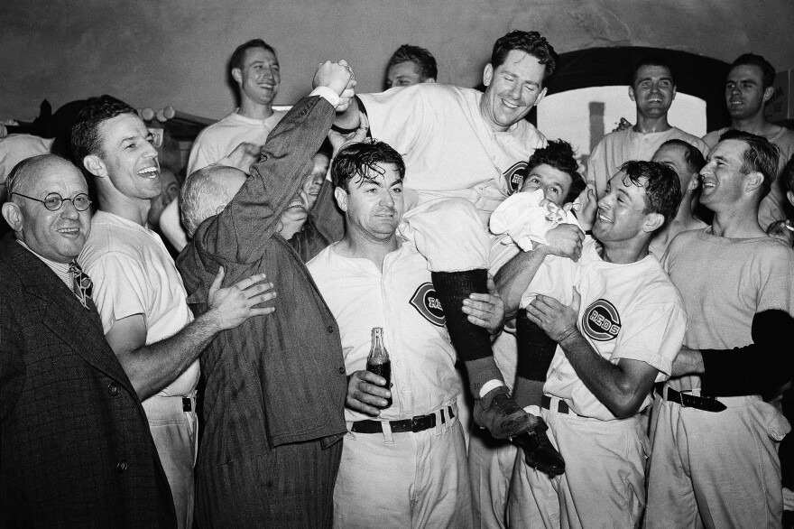

The 1940 Cincinnati Reds

Remembering Williard Hershberger
Williard Hershberger was the backup catcher for the 1940 Cincinnati Reds. Tragically, Hershberger took his own life during the season, a loss that deeply affected the team. Despite this heartbreaking event, the Reds rallied together and dedicated their season to his memory. Their resilience and unity in the face of adversity played a significant role in their successful campaign, culminating in their World Series victory. Hershberger's legacy lives on as a reminder of the strength and camaraderie that defined the 1940 Reds.
The 1940 Cincinnati Reds were a professional baseball team that played in Major
League Baseball (MLB) during the 1940 season. They were a member of the National
League (NL) and played their home games at Crosley Field, which was located in
Cincinnati, Ohio. The team was managed by Bill McKechnie and had a successful
season, finishing with a record of 100 wins and 53 losses, which was the best
in the National League that year. The Reds were known for their strong
pitching staff, which included players like Bucky Walters, Paul Derringer,
and Elmer Riddle, as well as their solid defense and timely hitting. The
team was led by several key players, including outfielder Frank McCormick,
first baseman Ival Goodman, and catcher Ernie Lombardi. The 1940 season
was particularly notable for the Reds because they went on to win the
World Series, defeating the Detroit Tigers in a best-of-seven series.
The Reds won the series four games to three, with Bucky Walters being named the
Most Valuable Player (MVP) of the series for his outstanding pitching performance.
The 1940 Cincinnati Reds are remembered as one of the great teams in baseball
history, and their World Series victory remains a significant achievement in the
franchise's history.
1940 Cincinnati Reds Roster
| Player Name |
Position |
BA |
HR |
| Paul Derringer |
Pitcher |
3.06 ERA |
115 Ks |
| Ernie Lombardi |
Catcher |
.319 |
14 |
| Frank McCormick |
First Baseman |
.309 |
19 |
| Lonny Frey |
Second Baseman |
.266 |
8 |
| Billy Werber |
Third Baseman |
.277 |
12 |
| Bill Myers |
Shortstop |
.202 |
5 |
| Morrie Arnovich |
Left Fielder |
.284 |
0 |
| Harry Craft |
Center Fielder |
.244 |
6 |
| Ival Goodman |
Right Fielder |
.258 |
12 |
| Bill McKechnie |
Manager |
N/A |
N/A |